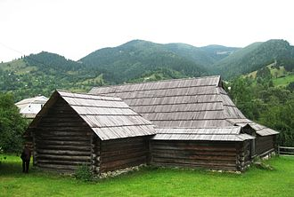

Екранізація
Режисер
Сергій Йосипович Параджанов — український та вірменський кінорежисер, сценарист, композитор українсько-вірменського походження.Один із представників хвилі «українського поетичного кіно». Започаткував в українському образотворчому мистецтві жанр колажу, який створював на засадах концептуалізму, хоча за життя ці твори перебували в андеграунді, і на виставках з'явились лише після смерті художника. Відомий, як режисер кінострічки «Тіні забутих предків» заснованої на одноіменної повісті Михайла Коцюбинського, яка посідає перше місце в списку 100 найкращих українських фільмів. Народний артист УРСР (1990, посмертно). Політв'язень СРСР (1973 — 1977). У 1990 році отримав звання народного артиста УРСР (посмертно), а у 1991 році — Державну премію України ім. Т. Шевченка (посмертно).
Сценарист
Іва́н Миха́йлович Ченде́й (17 (20) травня 1922, Дубове (смт) — 29 листопада 2005) — видатний український письменник, кіносценарист, журналіст, фольклорист, перекладач, співзасновник Народного Руху та PEN-Ukraine, лауреат Шевченківської премії (1994). Співавтор сценарію всесвітньовідомого фільму С.Параджанова «Тіні забутих предків» (1964).
Головна роль
Іва́н Васи́льович Миколайчу́к (15 червня 1941, Чортория, Кіцманський район, Чернівецька область, Українська РСР, СРСР — 3 серпня 1987, Київ, Українська РСР, СРСР) — український кіноактор, кінорежисер, сценарист. Лауреат Шевченківської премії 1988 року (посмертно). Зіграв 34 ролі в кіно, написав 9 сценаріїв та має дві режисерські роботи. В УРСР носив тавро «неблагонадійного».
Також головна роль
Ка́дочникова Лари́са Валенти́нівна (нар. 30 серпня 1937, Москва, РРФСР, СРСР) — радянська і українська акторка театру і кіно, лауреат Державної премії України ім. Тараса Григоровича Шевченка (1991). Народна артистка України (1992). Член Національної Спілки кінематографістів України.
Сюжет фільму
Малий гуцул Іванко Палійчук стає свідком загибелі свого брата Олекси, а потім вбивства свого батька у перепалці з чоловіком із ворожого роду Гутенюків. Під час цих подій Іванко знайомиться з Марічкою, донькою вбивці його батька, дає їй ляпаса і викидає хустку в річку. Проте замість ворожнечі між ними виникає приязнь. Після смерті брата Іванко лишається останньою дитиною в сім'ї. Іван та Марічка ростуть і проводять багато часу разом і закохуються одне в одного. Однак їхня рідня обурена цими стосунками, пам'ятаючи про ворожнечу родів. Марічка передбачає, що їм не бути парою. Господарство ведеться погано, тож невдовзі Іван вирушає на заробітки на полонини пасти овець і робити бринзу, плануючи повернутися до зими й одружитися з Марічкою. Якось, пішовши шукати загублену Іваном вівцю, Марічка зривається зі скелі в гірську річку та гине. Спустившись із полонини, Іван дізнається про зникнення коханої та вирушає на її пошуки. Приєднавшись до сплаву, він знаходить тіло Марічки. Після цього він замикається в собі й довго ходить понурий. За кілька років зустрічає Палагну й одружується з нею. Господарство ведеться добре, але Іван далі тужить за Марічкою. Палагна це розуміє, але намагається схилити Івана завести дітей. Він уникає цієї теми. Палагна починає зраджувати Іванові з сусідом — мольфаром Юрком. Іван, втім, байдужий до цього, оскільки все ще кохає Марічку. Померла починає йому ввижатися. Палагна просить у Юрка, щоб той наслав на Івана чари і той помер. Іван стає відлюдькуватим, образ Марічки з'являється йому знову й знову. Пішовши за примарою однієї холодної ночі, він помирає. Ховають Івана за місцевим звичаєм, з танцями і піснями, за чим у вікна спостерігають діти.
Передісторія
Сценарій фільму Сергій Параджанов писав із Іваном Чендеєм, упорядником закарпатських казок. Параджанов жив у Чендеїв майже місяць. Вчив Марію Чендей робити голубці з виноградного листя. Спав у робочому кабінеті Івана Михайловича. Після вечері лягав на диван і до другої ночі розказував письменникові технології написання сценаріїв. Зачіпав теми, на які подружжя боялося говорити. Іронізував:
Мені не можуть пришити український буржуазний націоналізм, бо за національністю я вірменин.
У часи опали прізвища Івана Чендея у титрах не було. У грудні 1962 на засіданні художньої ради Київської кіностудії ім. Довженка з нагоди святкування сторіччя від дня народження Михайла Коцюбинського сценарій фільму затвердили. Робота над фільмом тривала від 30 травня 1963 р. до 15 жовтня 1964 р. Сергій Параджанов про зйомки:
«Я ображав групу тим, що вивчав храми, ходив на хрестини, на похорони. Все, що бачите на екрані, було насправді. Так, як плачуть гуцули, ніхто не може плакати. Це був рік життя, прожитий біля вогнища, біля джерела натхнення. Це незвичайний край, який треба пізнавати й вивчати у всій його чарівності.»
Кастинг
На головну роль Івана Палійчука спочатку розглядали іншого актора, оскільки Параджанов вважав зовнішність Миколайчука невідповідною для ліричного героя. Втім проби вирішили провести, і згодом Параджанов писав:
Я не очікував нічого особливого, тому доручив Іллєнку (оператору) провести зйомки і пішов з павільйону. Через кілька хвилин мене наздогнав збуджений Юрій: "Сергію Йосиповичу! Поверніться! Це щось неймовірне! Щось нелюдське! Щось за межами розуміння і сприйняття." Злякавшись, що я пішов, Іван побілів, йому здалося, що він мені не сподобався (так зізнавався актор потім), і в ньому ніби щось прорвалося. Він зачарував нас. Юний, дуже стурбований, він світився дивовижним світлом. Така чистота, така пристрасність, така емоційність вихлюпувалися з нього, що ми були вражені, забули про все, навіть про те, що вже затверджено іншого актора.
Ларису Кадочникову затвердили швидко. Параджанов із Іллєнком приїхали до Міністерства культури СРСР для здачі сценарію стрічки. Там Іллєнко познайомив Параджанова із дружиною Ларисою. Побачивши її на вулиці, Сергій крикнув: «О, Марічка!» і вирішив віддати роль їй.
Знімання
Знімання тривали майже рік і проходили в селі Жаб'є і околицях села Криворівня Верховинського району Івано-Франківської області. Параджанов активно вивчав гуцульську культуру, закохавшись у текст Коцюбинського і не хотів знімати «чергове ювілейне кіно», адже спочатку картину планували до святкування столітнього ювілею Коцюбинського.
Будинок, де жив режисер під час знімань, був постійно переповнений місцевими гуцулами. Це місце Сергій знайшов із художником картини Георгієм Якутовичем, який знав і любив Карпати. Знімання тривали майже цілодобово. Якщо не працювали на майданчику, то робили це в будинку Параджанова, де проходили постійні наради. У вільні від знімань дні Параджанов ходив на весілля чи похорони в околицях, вивчав побут або ж вирушав у місцевий музей народного костюма.
У фільмі можна побачити багато обрядів Гуцульщини. На зніманнях було багато місцевих жителів, які контролювали автентичність постановки. Приміром, гуцулам не сподобалося, що Параджанов вирішив одягнути під час сцени весілля на шию нареченому і нареченій ярмо, адже такої традиції не існує. Однак епізод у фільмі зберегли.
Оператор Юрій Іллєнко розповідав, що на зніманнях частими були розбіжності між ним і Параджановим. Одного разу суперечка дійшла до дуелі на старовинних гуцульських пістолетах, які приніс один із місцевих жителів. Юрій так описав цю історію:
Йшов дощ, ми повинні були зустрітися на мосту через Черемош. Але річка розбушувалася так, що міст знесло, а з тридцяти метрів між нами на протилежних берегах я ніяк не міг стріляти. Увечері з Києва прийшли перші проявлені плівки. Ми прийшли в залу, сіли по різних кутах. Подивилися першу коробку, і я зрозумів, що нікуди не поїду. Ми обнялися, поцілувалися — і почали знову битися.
Іноді прискіпливість режисера була жорстокою. У сцені прощання Івана й Марічки йде дощ — знімання проходили на початку жовтня, поливальна установка лила воду з температурою 2 градуси, але актори зробили близько 10 дублів. На знімання епізоду зі срібним лісом команда виїжджала кілька десятків разів. Параджанову не подобалася погода, він змушував перебудовувати рейки, по яких повинен був «плисти» привид Марічки.
Музика
Сергій Параджанов для написання музики до свого фільму вирішив запросити композитора із Західної України, бо, на його думку, лише тут могли впоратися з «карпатською» темою. Серед претендентів були зокрема Анатолій Кос-Анатольський та Микола Колесса, але вибір пав на Мирослава Скорика. Режисер поставив йому завдання створити для фільму «геніальну музику». Сам же композитор згодом оцінив свою роботу як «достойну».
Окрім того, фільм насичений народною музикою в автентичному виконанні. Скорик згадував:
«Гуцулів навіть возили до Києва, записували їх у павільйоні. Таких звукозаписів доти не було. І навіть тепер не можна знайти. (...) А ще пам'ятаю, як нам треба було записати трембіти. (...) Просто неба це важко було зробити, і Параджанов десятеро трембітярів разом із трембітами заледве запхав у літак і привіз до Києва. (...) Причому інструменти везли у пасажирському салоні. Я ж їздив в експедиції в Карпати, добирав музикантів».
Музика стала одним із головних компонентів образної структури фільму. У стрічці звучать поширені у Карпатах інструменти — сопілка-денцівка, флояра, коза, дримба, трембіта. Співанки, мелодії весільних музи́к, голосіння, колядки і щедрівки («Добрий вечір тобі, пане господарю», «Во Вифлеємі нині новина», «Го-го-го, коза»), інші обрядові пісні (веснянка «Вербовая дощечка») та автентичність народної говірки створюють особливу цілісну звукову філософсько-естетичну концепцію фільму. На думку деяких сучасних дослідників, «такого багатства звукових складових до „Тіней забутих предків“ не знав жоден український фільм, що є однією з новаторських ознак стрічки».
Нагороди
- 1965 — Кубок фестивалю — МКФ у Римі
- 1966 — Золота медаль Сергію Параджанову — Міжнародний кінофестиваль у Салоніках (Греція)
- 1966 — спеціальна премія журі на Всесоюзному кінофестивалі у Києві за талановитий художній пошук та новаторство режисеру С. Параджанову, оператору Ю. Іллєнку, художникам Г. Якутовичу, М. Раковському, Л. Байковій, композитору М. Скорику.
- 1991-го оператору Юрію Іллєнку, акторці Ларисі Кадочниковій, художнику Григорію Якутовичу і покійному на той час Сергію Параджанову присудили за стрічку Шевченківську премію.